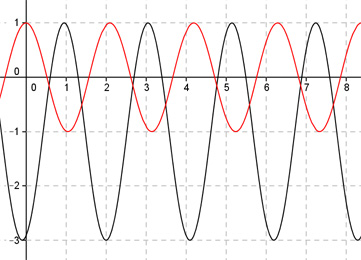

Aufgabe 276 Bestimmen Sie b und d für den dargestellten Graphen der Form y = a * cos (b * (x + c)) + d.  2п Abgelesen: Periode p = ---- (von 2 - 8,28) --> 3 2п 2п |b| = ---- = ---- = 3 p 2п ---- 3 b = 3 oder -3 wegen cos(x) = cos(-x) acos(3(x + c)) + d oder acos(-3(x + c)) + d Verschiebung von Punkt (0|0) in (2|-1) --> Abgelesen: Verschiebung entlang der y-Achse um -1 --> d = -1 acos(3(x + c)) - 1 oder acos(-3(x + c)) - 1 Abgelesen: Verschiebung entlang y = -1 um 2 nach rechts --> c = -2 acos(3(x - 2)) - 1 oder acos(-3(x - 2)) - 1 Abgelesen: |a| = 2 Spiegelung an der x-Achse --> a = -2 --> y = -2cos(3(x - 2)) - 1 oder y = -2cos(-3(x - 2)) - 1 Zum Vergleich: cos(3x)